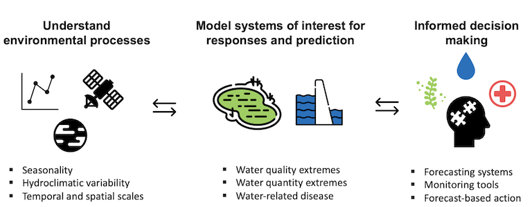
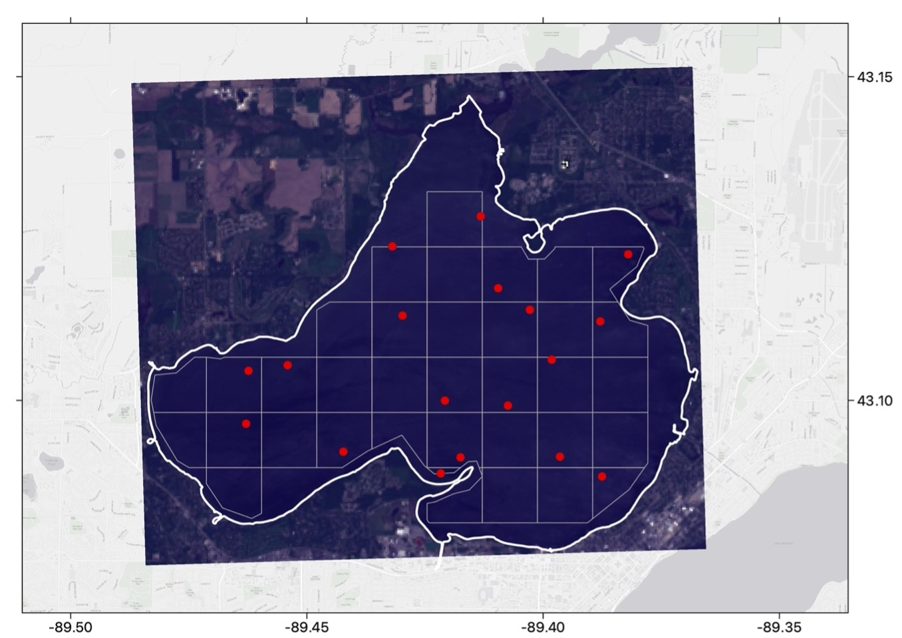
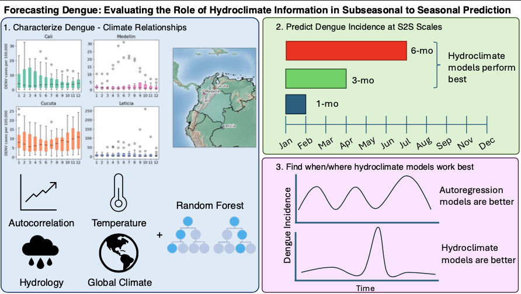

Hydroclimate variability on annual and seasonal timescales structure many biological systems, particularly those closely related to water. Links between hydrology, climate, and biological outcomes are often complex but can have significant impacts on ecosystem services and public health. My research deals with understanding the influence of hydroclimate on ecosystem processes, water systems modeling for ecosystem extremes, and development of forecasting and monitoring tools for decision-support.
Below is a rundown of each of my major research areas, with published papers linked
Harmful algae forecasts allow managers to make decisions about budgeting, monitoring, or closing waterbodies before a potentially toxic blooms happens. The decision you might make to prepare for a bloom has a lot to do with how much time you have before the bloom occurs, or the forecast lead time.
Much of my disseration work tried to understand if skillful forecasts of algae can be made at sub-seasonal to seasonal (S2S) lead times. When you have more time (weeks to months) to prepare for a bloom, you might be less interested in making short-term (days to weeks) decisions, like which beaches to close, and more interested in making decisions about your summer budget for test kits. To explore this topic, I developed cyanobacteria forecasts for Lake Mendota at sub-seasonal and seasonal lead times. I also expanded this approach to 178 lakes across the Northeast and Midwest U.S., to test efficacy on a large scale.
I also did some work relating satellite imagery from Sentinel-2 MSI and Sentinel-3 OLCI to algae pigments, and ultimately dissolved oxygen on Lake Mendota. We sampled lake Mendota for several years with a YSI EXO sonde on days that overlapped with satellite images of the lake. We then used a variety of machine learning techniques to retrive pigments and construct a relationship with dissolved oxygen. An example image of the data collection effort and a Sentinel-2 image can be seen below.
I've also taken these water systems modeling and forecasting approaches and applying them to different biological (or ecosystem) outcomes. Primarily mosquito-borne diseases including West Nile Virus in the U.S. and dengue fever in Colombia. I participated in the CDC issued West Nile Virus forecasting challenge in 2023 (results still to come), with the goal of developing a climate-based S2S forecasting system for neuroinvasive WNV cases.
More recently, we've partnered with UW-Madison's Global Health Institute and the One Health Center - Colombia to improve S2S forecasts of dengue virus in Colombia. My work finds that climate and machine learning based models outperform traditional methods at longer (3- and 6- month leads).
